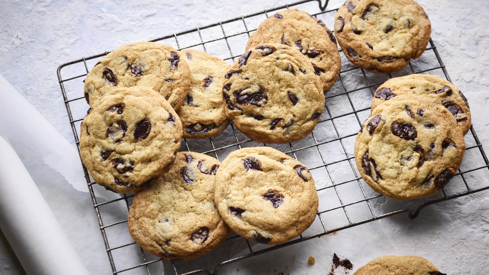

Vegan chocolate chip cookies

It only takes about half an hour to get a batch of these vegan chocolate chip cookies baked – then it’s just a matter of waiting for them to cool!
Each serving provides 203 kcal, 2g protein, 27g carbohydrate (of which 17g sugars), 10g fat (of which 3g saturates), 0.8g fibre and 0.3g salt.
Ingredients
- 200g/7oz dairy-free margarine
- 125g/4½oz soft light brown sugar
- 100g/3½oz caster sugar
- 1 tsp vanilla extract
- 250g/9oz plain flour
- ½ tsp baking powder
- ½ tsp bicarbonate of soda
- pinch of salt
- 200g/7oz vegan dark chocolate chips
- 1 tbsp soya milk
Method
- Preheat the oven to 180C/160C Fan/Gas 4 and line two baking trays with baking paper.
- Tip the dairy-free margarine, both sugars and the vanilla extract into a large bowl (or bowl of a free-standing mixer). Sift the flour, baking powder, bicarbonate of soda and a pinch of salt into the bowl and beat everything until thoroughly combined and almost smooth.
- Add the chocolate chips and soya milk and mix again until the chocolate chips are thoroughly incorporated.
- Use an ice cream scoop or two dessertspoons to drop neat mounds of dough onto the lined baking trays allowing plenty of space between each cookie as they will spread during cooking. Bake for about 10 minutes, or until golden brown.
- Remove from the oven and leave to cool on the baking trays.
Recipe credit: Annie Rigg, BBC Good Food
Return to Baking Page